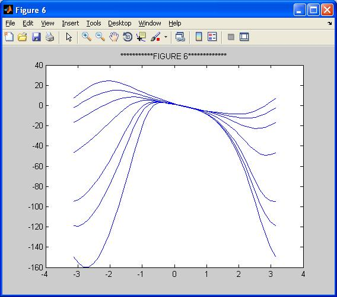

This is the readme for the models associated with the paper Varkonyi PL, Kiemel T, Hoffman K, Cohen AH, Holmes P, On the derivation and tuning of phase oscillator models for lamprey central pattern generators, J. Computational Neuroscience, 2008 25:245-61 This is a collection of matlab-based simulations that provide several figures of the paper. In this paper, we derive phase oscillator models for the lamprey central pattern generator from two biophysically based segmental models. We study intersegmental coordination and show how these models can provide stable intersegmental phase lags observed in real animals. To obtain Figure xxx, 'FIG_xxx.m' should be evaluated. For example: Running FIG_2_6_7 produces Figures 2, 6, and 7 after about 12 minutes on a 3.2 GHz 2GB Xeon. Figure 6 for example will look like:  The model files were contributed by Peter Varkonyi.